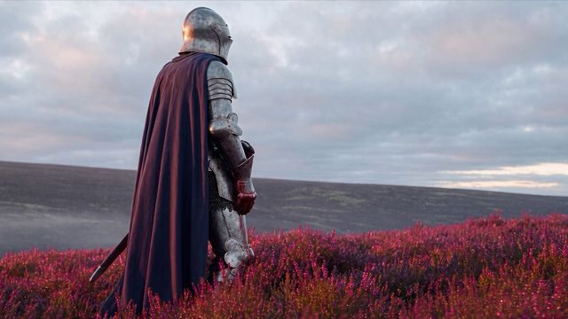
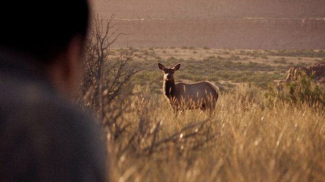
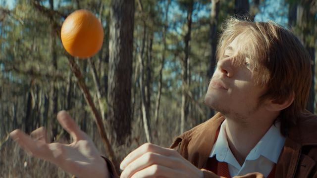
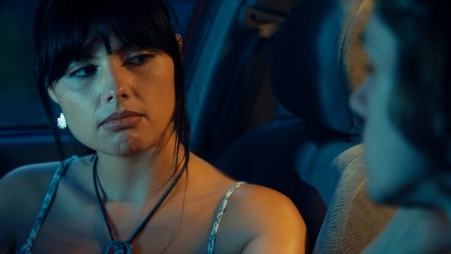

Engine WonderShort films and animation4 videos
Engine Wonder
Four original shorts from Engine Wonder, my studio for traditional and AI filmmaking: a fallen knight's final moments, a hunt in the Old West, a quiet reflection on solitude, and a drive through memories of a past love. Directed by me.

Play video: Knightfall
Play video: Frontier Hunt
Play video: As You
Play video: DriftOverview
- Brief and audience
- Original Engine Wonder short films and animations, released on the Engine Wonder YouTube channel.
- Collaborators
- Cast: Sabrina Sooy and Lywake (Drift), Lywake (As You)
- Type
- Original films for Engine Wonder, my company
- Deliverables
- Knightfall00:32on YouTube
- Frontier Hunt00:18on YouTube
- As You00:52on YouTube
- Drift02:08on YouTube
Creative approach
To confirm: Creative approach
How it was made
To confirm: Methods used on these films (traditional, AI or both) and what you directed, shot or edited
Outcome
To confirm: Outcome or lessons learned